← 返回阅读库 · 原论文目录
论文讲解阅读文档 · 论文精读 · v233
何恺明&谢赛宁署名！谷歌：Vision Banana
视频时长 00:12:16；讲解文字 4,277 字符；提取讲解画面 162 张。按视频原顺序阅读，每段文字保留时间戳。
文字来自整段视频的自动语音转写，按自然停顿分段，并与 PPT / 论文页面 / 演示画面对齐。未将讲解压缩为摘要；术语、数字和口述公式请结合画面及原论文核对。 阅读稿已校正规范部分明确术语误识别；原始逐字稿和每处修改记录另行保留。
讲解画面为源视频截图（638×360），不是可编辑 PPT 文件。全片按每秒 2 帧扫描内容变化，逐步展开页保留；连续动画保留代表画面。清晰度受源视频限制。
下载完整资料包 · 含离线 HTML、PDF、Word、全部 PPT 画面和字幕。
原论文与材料
Image Generators are Generalist Vision Learners · 下载完整 PDF（30 页）
按时间阅读
00:00:00–00:00:04 · 画面 001
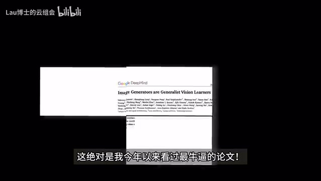
00:00:00–00:00:04 · 画面 001这绝对是我今年以来看到过最牛逼的论文由谷歌 DeepMind 发表何恺明谢赛宁都是论文的作者之一他证明了一件事一个纯粹的图像生成模型天生就懂这个世界的物理规律许多科技媒体称这是视觉的 GPT 时刻它不需要专门的分割头
00:00:04–00:00:08 · 画面 002
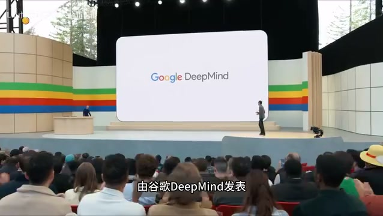
00:00:04–00:00:08 · 画面 00200:00:08–00:00:12 · 画面 003
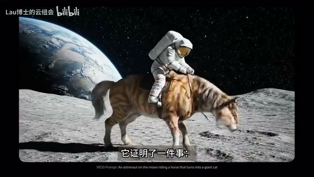
00:00:08–00:00:12 · 画面 00300:00:12–00:00:14 · 画面 004
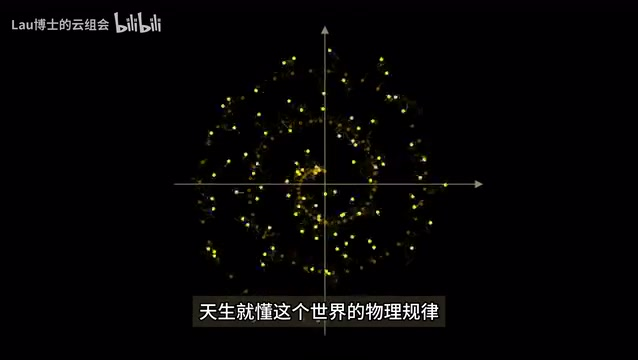
00:00:12–00:00:14 · 画面 00400:00:14–00:00:15 · 画面 005
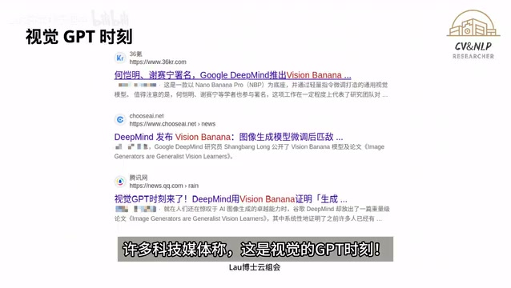
00:00:14–00:00:15 · 画面 00500:00:15–00:00:19 · 画面 006
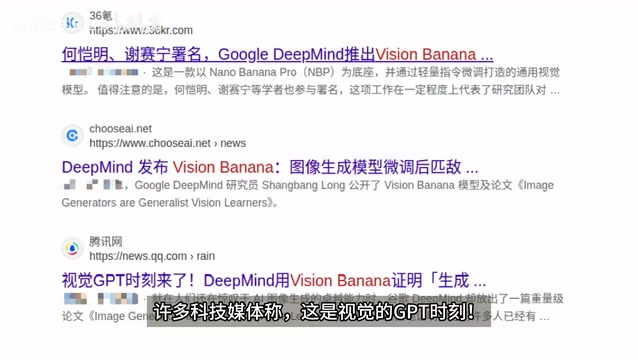
00:00:15–00:00:19 · 画面 006不需要专门的深度头就能在目标检测、语义分割、度量深度估计这些任务上全面吊打 SAM3、Depth Anything 3 这些最强的专用模型。用生成方式统一所有的视觉任务。同学们欢迎来到本期云组会视觉大一统 VisionBanana。同学们在讲 VisionBanana 之前，我们先来了解这篇论文的背景。计算机视觉发展了这么多年，一直有一个根深蒂固的执念。
00:00:19–00:00:23 · 画面 007
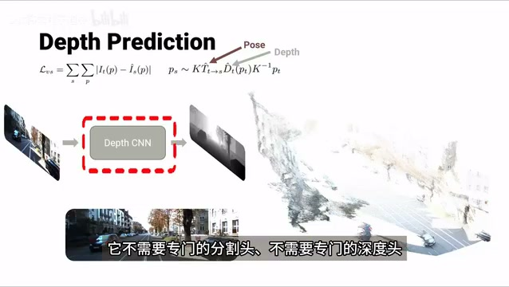
00:00:19–00:00:23 · 画面 00700:00:23–00:00:25 · 画面 008
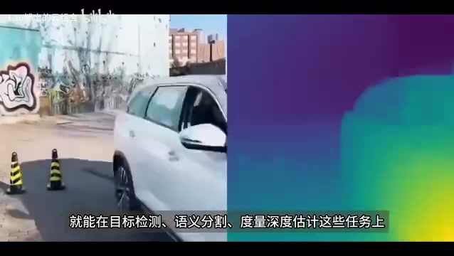
00:00:23–00:00:25 · 画面 00800:00:25–00:00:26 · 画面 009
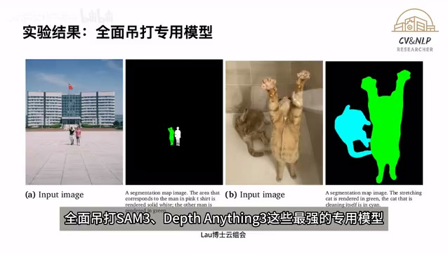
00:00:25–00:00:26 · 画面 00900:00:26–00:00:30 · 画面 010
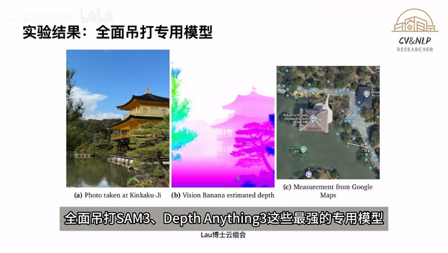
00:00:26–00:00:30 · 画面 01000:00:30–00:00:33 · 画面 011
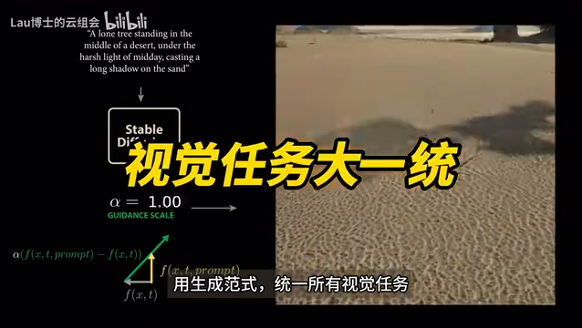
00:00:30–00:00:33 · 画面 01100:00:33–00:00:37 · 画面 012
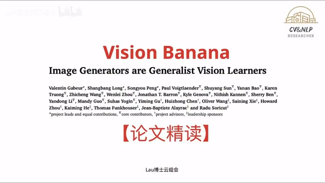
00:00:33–00:00:37 · 画面 01200:00:37–00:00:41 · 画面 013
00:00:37–00:00:41 · 画面 01300:00:41–00:00:42 · 画面 014
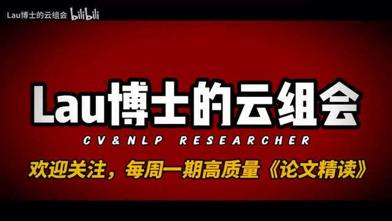
00:00:41–00:00:42 · 画面 01400:00:42–00:00:44 · 画面 015
00:00:42–00:00:44 · 画面 01500:00:44–00:00:48 · 画面 016
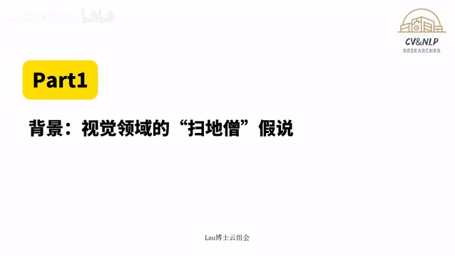
00:00:44–00:00:48 · 画面 01600:00:48–00:00:52 · 画面 017
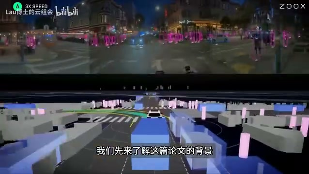
00:00:48–00:00:52 · 画面 01700:00:52–00:00:56 · 画面 018
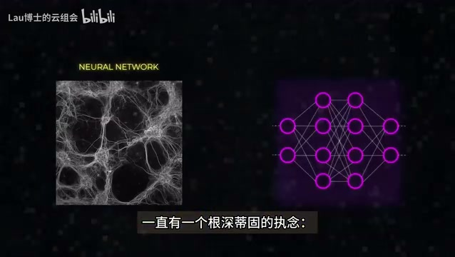
00:00:52–00:00:56 · 画面 018不同的任务必须用不同的架构，分割用 UNET 那一套，检测用 UNO 那一套，深度估计用另外一个网络。每个任务都有自己的专用解码头，每个任务都要单独训练。直到 2023 年 Sam 出来了，才第一次看到了通用视觉模型的曙光。Sam 可以分割任何图像里的任何物体，不需要针对每个类别重新训练。但大家注意，Sam 本质还是一个判别式模型，它的工作方式是。
00:00:56–00:00:58 · 画面 019
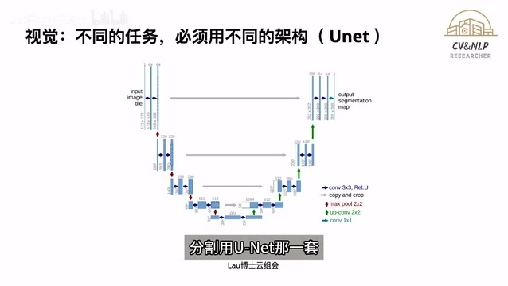
00:00:56–00:00:58 · 画面 01900:00:58–00:01:00 · 画面 020
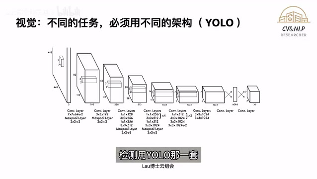
00:00:58–00:01:00 · 画面 02000:01:00–00:01:06 · 画面 021
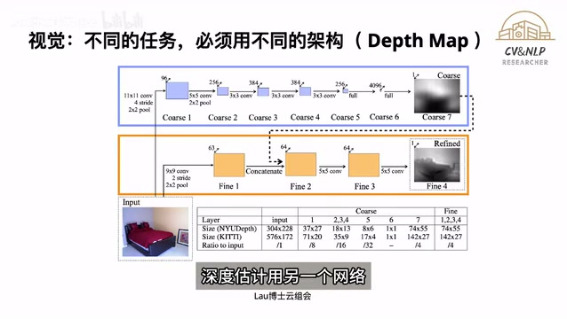
00:01:00–00:01:06 · 画面 02100:01:06–00:01:11 · 画面 022
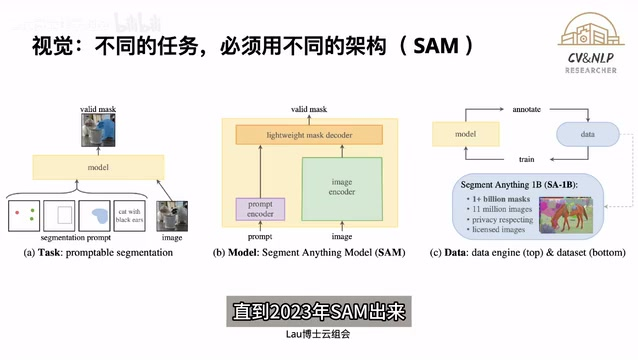
00:01:06–00:01:11 · 画面 02200:01:11–00:01:15 · 画面 023
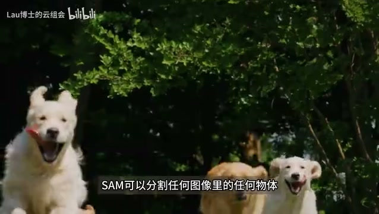
00:01:11–00:01:15 · 画面 02300:01:15–00:01:19 · 画面 024
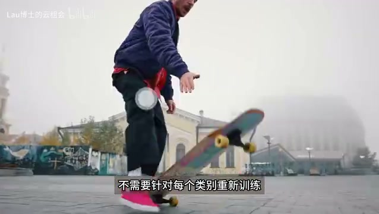
00:01:15–00:01:19 · 画面 02400:01:19–00:01:21 · 画面 025
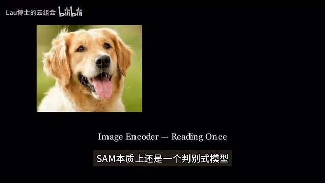
00:01:19–00:01:21 · 画面 02500:01:21–00:01:24 · 画面 026
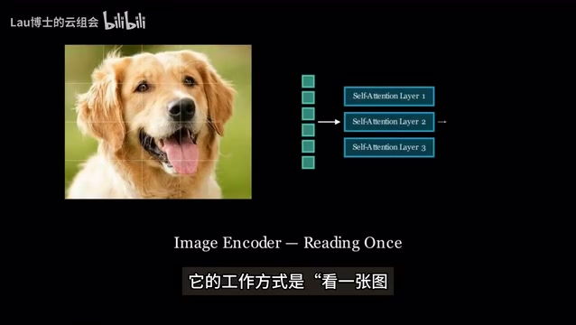
00:01:21–00:01:24 · 画面 026看一张图然后输出一个掩码它的预训练目标还是判别式的那有没有另一种可能一个生成式模型一个会画图的模型比判别式模型更懂视觉这个想法其实早就有了早在 2020 年 OpenAI 就提出了 iGPT 用生成式预训练来做视觉任务后来又有了 LVM 这些模型但结果怎么样呢
00:01:24–00:01:25 · 画面 027
00:01:24–00:01:25 · 画面 02700:01:25–00:01:29 · 画面 028
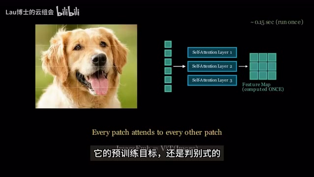
00:01:25–00:01:29 · 画面 02800:01:29–00:01:33 · 画面 029
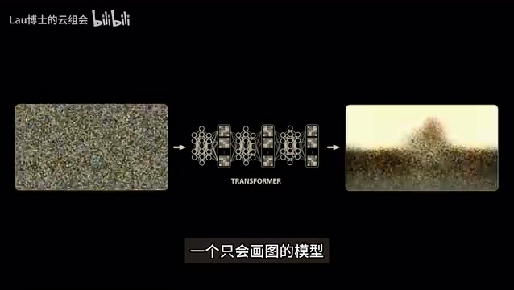
00:01:29–00:01:33 · 画面 02900:01:33–00:01:41 · 画面 030
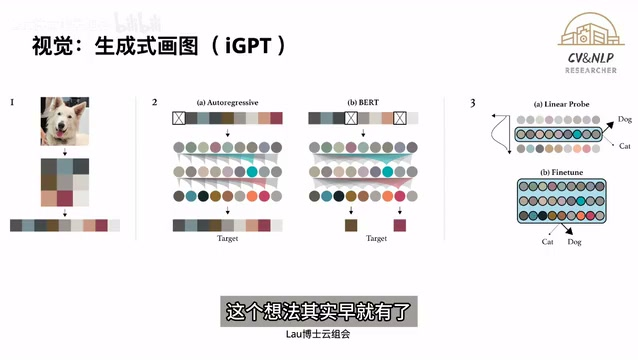
00:01:33–00:01:41 · 画面 03000:01:41–00:01:42 · 画面 031
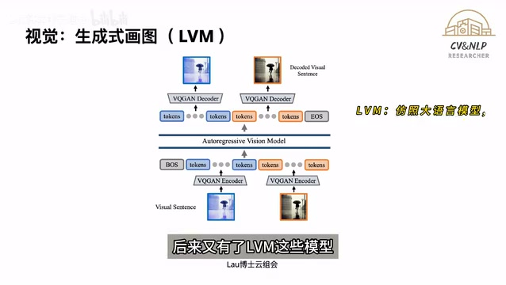
00:01:41–00:01:42 · 画面 03100:01:42–00:01:46 · 画面 032
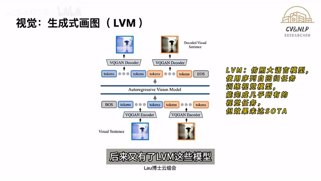
00:01:42–00:01:46 · 画面 032一直不行他们在理解任务上的表现永远比不过同时代的判别模型所以大家普遍觉得生成式预训练虽然能扩展但天生就不适合做感知任务但谷歌的这篇论文提出了一个非常大胆的假说如果一个模型能完美的深层一张包含复杂光影几何关系和鱼信息的图像那它一定在内部已经掌握了这些规律
00:01:46–00:01:50 · 画面 033
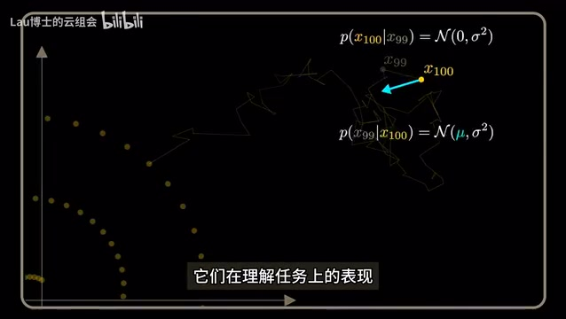
00:01:46–00:01:50 · 画面 03300:01:50–00:01:52 · 画面 034
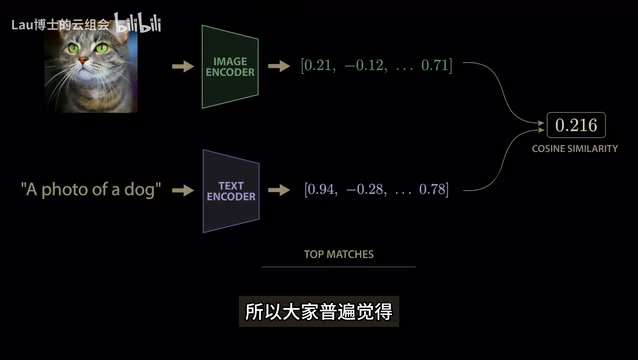
00:01:50–00:01:52 · 画面 03400:01:52–00:01:56 · 画面 035
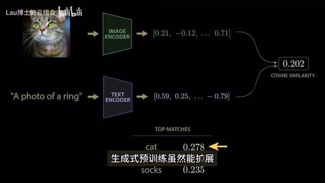
00:01:52–00:01:56 · 画面 03500:01:56–00:02:00 · 画面 036
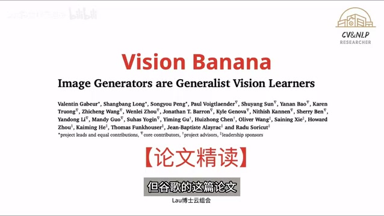
00:01:56–00:02:00 · 画面 03600:02:00–00:02:04 · 画面 037
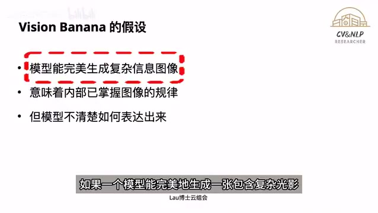
00:02:00–00:02:04 · 画面 03700:02:04–00:02:07 · 画面 038
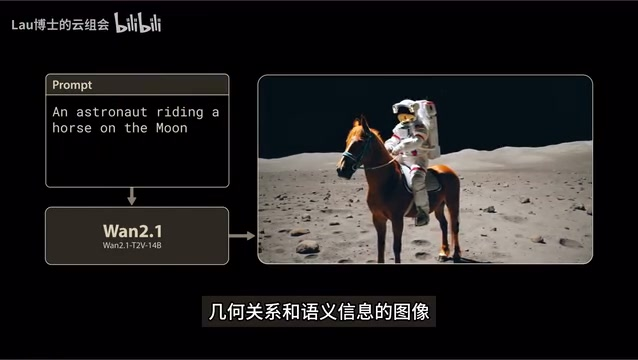
00:02:04–00:02:07 · 画面 03800:02:07–00:02:11 · 画面 039
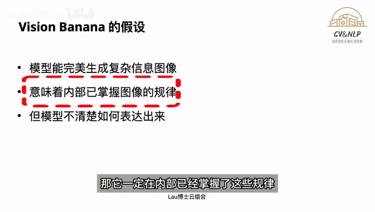
00:02:07–00:02:11 · 画面 039他只是不知道怎么把这些内功用出来而已。这个假说就是 Vision Banana 的灵魂，而整个论文工作本质上就是验证了这个假说。谷歌是怎么把这个看似天方夜谭的想法变成现实的呢？这就要说到 Vision Banana 最核心的三个设计。
00:02:11–00:02:15 · 画面 040
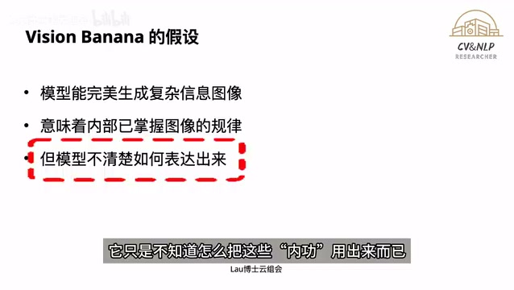
00:02:11–00:02:15 · 画面 04000:02:15–00:02:19 · 画面 041
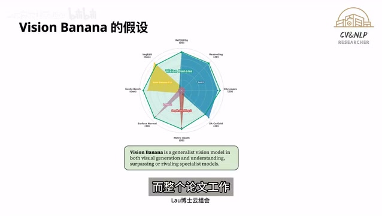
00:02:15–00:02:19 · 画面 04100:02:19–00:02:20 · 画面 042
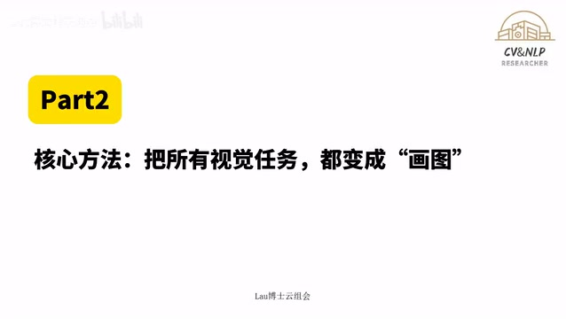
00:02:19–00:02:20 · 画面 04200:02:20–00:02:28 · 画面 043
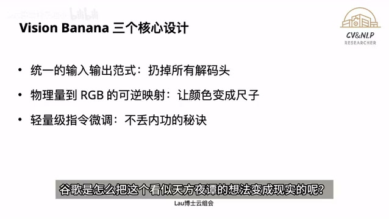
00:02:20–00:02:28 · 画面 04300:02:28–00:02:29 · 画面 044
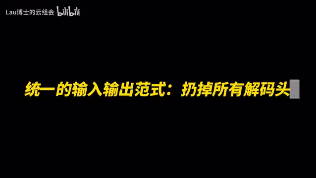
00:02:28–00:02:29 · 画面 04400:02:29–00:02:31 · 画面 045
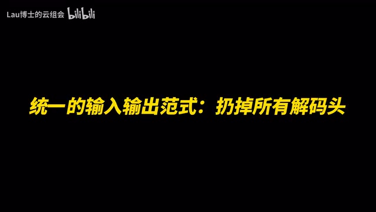
00:02:29–00:02:31 · 画面 045首先扔掉所有任务专用的解码头这里先给不熟悉的同学解释一下什么是解码头简单来说就是模型最后那一层专门用来输出特定结果的网络比如分割头输出掩码深度头输出深度值每个任务都要有一个自己的头这是过去 CV 模型标配但 Vision Banana 说我不需要这些
00:02:31–00:02:35 · 画面 046
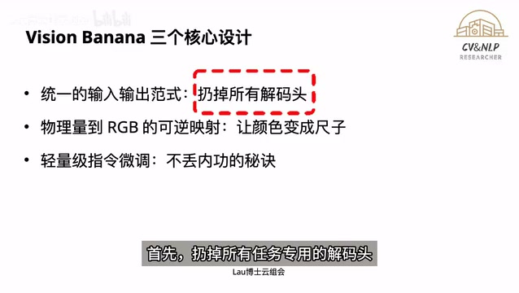
00:02:31–00:02:35 · 画面 04600:02:35–00:02:36 · 画面 047
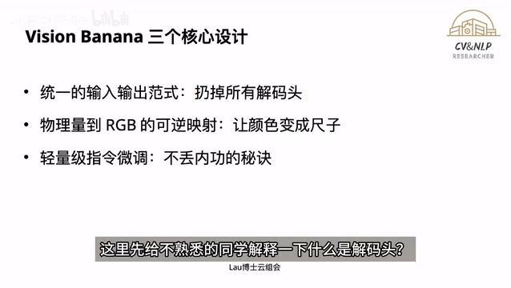
00:02:35–00:02:36 · 画面 04700:02:36–00:02:38 · 画面 048
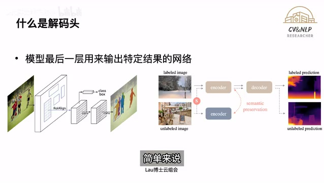
00:02:36–00:02:38 · 画面 04800:02:38–00:02:42 · 画面 049
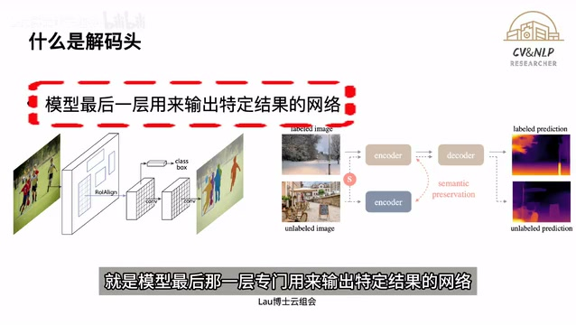
00:02:38–00:02:42 · 画面 04900:02:42–00:02:43 · 画面 050
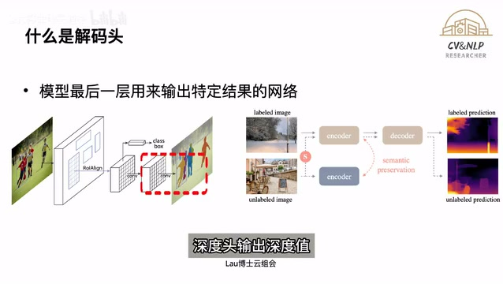
00:02:42–00:02:43 · 画面 05000:02:43–00:02:47 · 画面 051
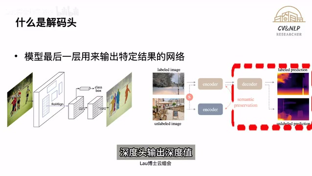
00:02:43–00:02:47 · 画面 05100:02:47–00:02:51 · 画面 052
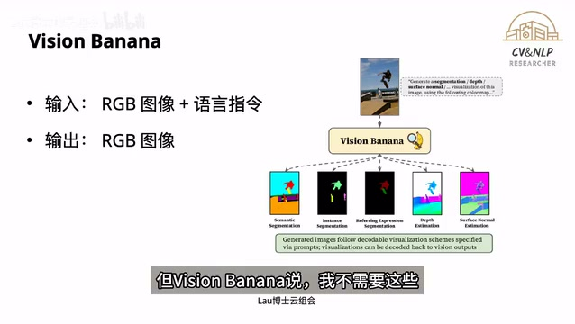
00:02:47–00:02:51 · 画面 052我只有一个输入一个输出，输入一张带处理的 RGB 图像加一段自然语言指令，输出一张 RGB 图像。没错，就这么简单。所有的视觉任务都被重构为根据指令画图的任务。以论文的图一为例，如果我想让模型分割出图中的画板，不需要专门训练一个分割图。
00:02:51–00:02:53 · 画面 053
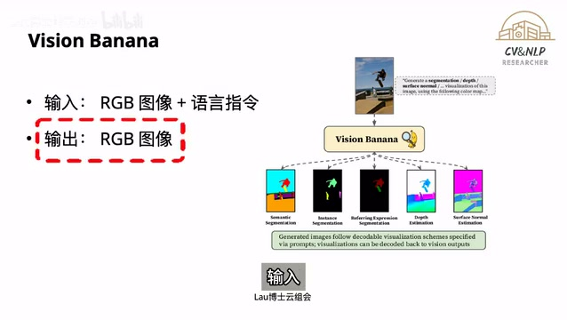
00:02:51–00:02:53 · 画面 05300:02:53–00:02:57 · 画面 054
00:02:53–00:02:57 · 画面 05400:02:57–00:02:58 · 画面 055
00:02:57–00:02:58 · 画面 05500:02:58–00:03:02 · 画面 056
00:02:58–00:03:02 · 画面 05600:03:02–00:03:05 · 画面 057
00:03:02–00:03:05 · 画面 05700:03:05–00:03:06 · 画面 058
00:03:05–00:03:06 · 画面 05800:03:06–00:03:10 · 画面 059
00:03:06–00:03:10 · 画面 059只需要给它一个指令请用黄色 RGB 值 255250 把图中的画板涂满然后模型就会生成一张新的图片其中画板的区域是纯黄色这样我们就得到了一个完美的分割掩码这里补充一个关键细节论文里明确说明指令的格式完全是灵活的你可以用自然语言描述颜色映射也可以用 JSON 格式甚至可以用 16 进制颜色码比如你可以说生成语意分割颜色映射为 CAT RED BACKGROUND
00:03:10–00:03:11 · 画面 060
00:03:10–00:03:11 · 画面 06000:03:11–00:03:16 · 画面 061
00:03:11–00:03:16 · 画面 06100:03:16–00:03:17 · 画面 062
00:03:16–00:03:17 · 画面 06200:03:17–00:03:28 · 画面 063
00:03:17–00:03:28 · 画面 06300:03:28–00:03:29 · 画面 064
00:03:28–00:03:29 · 画面 06400:03:29–00:03:34 · 画面 065
00:03:29–00:03:34 · 画面 06500:03:34–00:03:38 · 画面 066
00:03:34–00:03:38 · 画面 06600:03:38–00:03:40 · 画面 067
00:03:38–00:03:40 · 画面 067Yellow 也可以说猫的耳朵用 255 165 0 背景用 125 0 125，模型都能准确理解。再比如实例分割这个任务要求区分同一类别的不同个体。这里有个问题，我们事先不知道图里有多少个实例，所以没法在指令里提前给每个实例分配颜色。谷歌的解决方案非常巧妙。
00:03:40–00:03:42 · 画面 068
00:03:40–00:03:42 · 画面 06800:03:42–00:03:46 · 画面 069
00:03:42–00:03:46 · 画面 06900:03:46–00:03:49 · 画面 070
00:03:46–00:03:49 · 画面 07000:03:49–00:03:54 · 画面 071
00:03:49–00:03:54 · 画面 07100:03:54–00:03:55 · 画面 072
00:03:54–00:03:55 · 画面 07200:03:55–00:03:59 · 画面 073
00:03:55–00:03:59 · 画面 07300:03:59–00:04:03 · 画面 074
00:03:59–00:04:03 · 画面 074单类逐次推理你先告诉模型把图里所有的面包都分割出来每个面包用不同的颜色模型就会自动给每个面包分配一个唯一的颜色然后我们只需要对颜色进行聚类就能得到每个实例的掩码同学们能给这个思路打几分呢?这和当年大语言模型发展路径一模一样 LLM 也只是一个输入一个输出
00:04:03–00:04:04 · 画面 075
00:04:03–00:04:04 · 画面 07500:04:04–00:04:08 · 画面 076
00:04:04–00:04:08 · 画面 07600:04:08–00:04:11 · 画面 077
00:04:08–00:04:11 · 画面 07700:04:11–00:04:19 · 画面 078
00:04:11–00:04:19 · 画面 07800:04:19–00:04:31 · 画面 079
00:04:19–00:04:31 · 画面 079所有的 NLP 任务翻译摘要问答推理都被统一成了预测下一个词的生成任务现在视觉领域也终于走到了这一步刚才我们说到 Vision Banana 的本质是图像生成模型它只会输出 RGB 彩色图片不会直接输出数字不会直接输出几米也不会输出三维法线的角度但假设我们要让它做两个 3D 硬核任务一 单目度量深度估计算出图里每一个点离镜头多少米
00:04:31–00:04:32 · 画面 080
00:04:31–00:04:32 · 画面 08000:04:32–00:04:33 · 画面 081
00:04:32–00:04:33 · 画面 08100:04:33–00:04:44 · 画面 082
00:04:33–00:04:44 · 画面 08200:04:44–00:04:49 · 画面 083
00:04:44–00:04:49 · 画面 08300:04:49–00:04:53 · 画面 084
00:04:49–00:04:53 · 画面 0842、表面法线估计，算出墙面、桌面、物体表面朝哪个方向倾斜多少角度。模型涂不出数字，只能画图。那怎么办？很简单，把所有的物理数值全部翻译成颜色，让模型画颜色，我们再把颜色翻译回物理数值。这就是这套可逆映射的唯一作用。这个转化过程是 Vision Banana 的第二个核心技术，也是论文里数学细节最多的部分。我会用最通俗的语言讲清楚。
00:04:53–00:04:55 · 画面 085
00:04:53–00:04:55 · 画面 08500:04:55–00:04:59 · 画面 086
00:04:55–00:04:59 · 画面 08600:04:59–00:05:22 · 画面 087
00:04:59–00:05:22 · 画面 087保证同学们能听懂，这里有两个问题需要解决。第一，深度值的范围很大，从 0.1 米到几百米不等。如果直接的线性映射，近距离的物体就会丢失很多细节，而近距离的物体往往是我们最关心的。第二，这个映射必须是完全可逆的，也就是说模型画出来的颜色
00:05:22–00:05:47 · 画面 088
00:05:22–00:05:47 · 画面 088必须能精确的还原成原来的深度值不能有任何误差谷歌的解决方案分两步第一步给深度数值做偏心调教论文用一个幂变换公式把近距离的深度拉开色差把远距离的深度压缩简化保证近处的细节保留远处不浪费算力这样模型就可以给近距离的物体分配更多的编码空间
00:05:47–00:05:51 · 画面 089
00:05:47–00:05:51 · 画面 08900:05:51–00:05:56 · 画面 090
00:05:51–00:05:56 · 画面 09000:05:56–00:05:57 · 画面 091
00:05:56–00:05:57 · 画面 09100:05:57–00:06:02 · 画面 092
00:05:57–00:06:02 · 画面 09200:06:02–00:06:03 · 画面 093
00:06:02–00:06:03 · 画面 09300:06:03–00:06:05 · 画面 094
00:06:03–00:06:05 · 画面 094保证细节的精度，比如 0.1 米和 0.2 米的深度差在变化后会对应很大的颜色差，而 100 米和 200 米的深度差变化后颜色几乎没有变化，这完全符合我们的实际需求。第二步，3D 希尔伯特曲线映射到 RGB，经过幂变换后深度值被归一化到了 01 区间。接下来我们需要把这个标量值映射到三维的 RGB 空间，谷歌用了一个非常巧妙的方法，沿着 RGB 立方体的边缘
00:06:05–00:06:16 · 画面 095
00:06:05–00:06:16 · 画面 09500:06:16–00:06:31 · 画面 096
00:06:16–00:06:31 · 画面 09600:06:31–00:06:32 · 画面 097
00:06:31–00:06:32 · 画面 097画一条 3D 希尔伯特曲线把深度数值按顺序铺满 RGB 色彩立方体保证远近距离和颜色一一对应相邻数值色差连贯而且是双向可逆的模型画出什么颜色我们反向查表就能精确的还原出多少米倾斜多少度没有模糊
00:06:32–00:06:37 · 画面 098
00:06:32–00:06:37 · 画面 09800:06:37–00:06:38 · 画面 099
00:06:37–00:06:38 · 画面 09900:06:38–00:06:43 · 画面 100
00:06:38–00:06:43 · 画面 10000:06:43–00:06:44 · 画面 101
00:06:43–00:06:44 · 画面 10100:06:44–00:07:01 · 画面 102
00:06:44–00:07:01 · 画面 102没有误差，这就相当于我们给模型一把用颜色做的尺子，模型只需要按照这把尺子把每个像素的深度值画成对应的颜色就行了。我们拿到这张彩色图，再用同一把尺子就能精确的量出每个像素的真实距离，这个设计是天才级的，它把一个复杂的回归问题变成了一个简单的生成问题。
00:07:01–00:07:06 · 画面 103
00:07:01–00:07:06 · 画面 10300:07:06–00:07:14 · 画面 104
00:07:06–00:07:14 · 画面 10400:07:14–00:07:15 · 画面 105
00:07:14–00:07:15 · 画面 10500:07:15–00:07:16 · 画面 106
00:07:15–00:07:16 · 画面 106最后一个问题，怎么让生成模型学会这些新的画图方式，同时又不丢失它原来的画图能力？很多同学可能都有过这样的经验，你给大模型微调一个特定任务，它就会变得只会干这个任务，原来的通用能力全没了。这就是所谓的灾难性遗忘。对于这个问题，谷歌用了一个非常简单但极其有效的策略。
00:07:16–00:07:32 · 画面 107
00:07:16–00:07:32 · 画面 10700:07:32–00:07:37 · 画面 108
00:07:32–00:07:37 · 画面 108轻量级指令微调。他们没有重新训练模型，也没有用大量的感知数据去微调，他们只是在 nano banana pro 原有的生成训练数据中混入了极少比例的视觉任务数据。
00:07:37–00:07:55 · 画面 109
00:07:37–00:07:55 · 画面 109同时在微调的每一个 batch 里大部分的样本还是原来的图像生成数据只有极少数是视觉任务数据这就保证了模型不会忘记原来的生成能力微调之后 Vision Banana 的图像生成质量和原版的 Nano Banana Pro 几乎一模一样你看这张对比图左边是微调后的 Vision Banana 右边是原版的 Nano Banana Pro
00:07:55–00:08:10 · 画面 110
00:07:55–00:08:10 · 画面 11000:08:10–00:08:11 · 画面 111
00:08:10–00:08:11 · 画面 11100:08:11–00:08:13 · 画面 112
00:08:11–00:08:13 · 画面 11200:08:13–00:08:15 · 画面 113
00:08:13–00:08:15 · 画面 113同学们能看出区别吗？我反正是看不出来了，甚至在图像编辑任务上它的表现也和原版不相上下。
00:08:15–00:08:23 · 画面 114
00:08:15–00:08:23 · 画面 11400:08:23–00:08:24 · 画面 115
00:08:23–00:08:24 · 画面 11500:08:24–00:08:25 · 画面 116
00:08:24–00:08:25 · 画面 116好了 讲完了方法我们来看最激动人心的部分 实验结果首先是 2D 语义分割任务在 Cityscapes 的验证集上 Vision Banana 取得了 0.699 的 mIoU 的成绩直接超过了 SAM 3 的 0.652 领先了 4.7 个百分点要知道 SAM 3 是 Meta 亲近资源打造的通用分割模型是整个行业公认的天花板
00:08:25–00:08:35 · 画面 117
00:08:25–00:08:35 · 画面 11700:08:35–00:08:36 · 画面 118
00:08:35–00:08:36 · 画面 11800:08:36–00:08:38 · 画面 119
00:08:36–00:08:38 · 画面 11900:08:38–00:08:55 · 画面 120
00:08:38–00:08:55 · 画面 120而 Vision Banana 一个从来没有专门训练过分割任务的生成模型竟然给它给抄了在指代分割任务上它不仅能理解穿着粉色 T 恤的男人这种外观描述还能理解正在伸缩懒腰的猫这种动作描述
00:08:55–00:09:01 · 画面 121
00:08:55–00:09:01 · 画面 12100:09:01–00:09:02 · 画面 122
00:09:01–00:09:02 · 画面 12200:09:02–00:09:05 · 画面 123
00:09:02–00:09:05 · 画面 12300:09:05–00:09:06 · 画面 124
00:09:05–00:09:06 · 画面 124如果说分割任务的结果已经让你震惊了，那接下来的度量深度估计会让你怀疑人生。度量深度估计就是要输出每个像素点距离相机的真实物理距离，这是一个非常难的任务，因为单张图片本身是没有深度信息的，传统的方法都需要依赖相机的内参，而且精度一直不高。
00:09:06–00:09:32 · 画面 125
00:09:06–00:09:32 · 画面 125在完全不依赖任何相机内参的情况下 Vision Banana 在 NYU、ETH3D、DIODE、KITTI 四个标准基准测试上平均δ1 的精度达到了 0.929 超越了 Depth Anything 3 的 0.918δ1 就是预测深度和真实深度的比值在 0.8 到 1.25 之间的像素比例 0.929 意味着
00:09:32–00:09:38 · 画面 126
00:09:32–00:09:38 · 画面 12600:09:38–00:09:39 · 画面 127
00:09:38–00:09:39 · 画面 12700:09:39–00:09:42 · 画面 128
00:09:39–00:09:42 · 画面 12800:09:42–00:09:44 · 画面 129
00:09:42–00:09:44 · 画面 12900:09:44–00:09:58 · 画面 130
00:09:44–00:09:58 · 画面 13092.9%的像素的深度误差都在 25%以内这是一个非常惊人的数字更抽象的是作者做的那个野外测试他们在日本金阁市随手拍了一张照片然后用 Vision Banana 预测了某一个点的深度结果是 13.71 米
00:09:58–00:10:34 · 画面 131
00:09:58–00:10:34 · 画面 131然后他们用谷歌地图实测了一下真实距离是 12.87 米误差只有 0.84 米不到 7%我看到这个结果的时候真的是非常激动一个模型仅仅通过画图训练出来的能力竟然能精确的感知到现实世界的绝对尺度这意味着他真的理解了这个世界的三维结构他不是在瞎猜他是真的看到了深度同学们能给这个模型的表现打几分呢?
00:10:34–00:10:35 · 画面 132
00:10:34–00:10:35 · 画面 13200:10:35–00:10:36 · 画面 133
00:10:35–00:10:36 · 画面 133好了同学们讲完了实验结果我们来冷静的分析一下 Vision Banana 的出现到底意味着什么它还有哪些不足首先 Vision Banana 向我们证明了图像生成预训练本质上就是一种通用的视觉学习强大的生成能力天然就蕴含着强大的理解能力这篇论文很可能会成为计算机视觉发展史上的一个转折点
00:10:36–00:10:48 · 画面 134
00:10:36–00:10:48 · 画面 13400:10:48–00:10:49 · 画面 135
00:10:48–00:10:49 · 画面 13500:10:49–00:10:53 · 画面 136
00:10:49–00:10:53 · 画面 13600:10:53–00:10:57 · 画面 137
00:10:53–00:10:57 · 画面 13700:10:57–00:10:59 · 画面 138
00:10:57–00:10:59 · 画面 138就像 GPT-3 之于 NLP 一样它预示着视觉领域的大统一时代真的要来了
00:10:59–00:11:02 · 画面 139
00:10:59–00:11:02 · 画面 13900:11:02–00:11:04 · 画面 140
00:11:02–00:11:04 · 画面 14000:11:04–00:11:07 · 画面 141
00:11:04–00:11:07 · 画面 141所有的任务分割、检测、深度估计、法线估计、光流估计都可以统一到一个生成式的框架下，我们只需要一个大模型就能解决所有的视觉问题。论文里还提到了一个非常深刻的观点，生成式模型天然解决了判别式模型输出的奇异问题，比如 SAM 在分割模糊物体时会返回多个掩码让用户自己选，而生成式模型的学习是完整的数据分布，它自然知道最可能的结果是什么
00:11:07–00:11:13 · 画面 142
00:11:07–00:11:13 · 画面 14200:11:13–00:11:17 · 画面 143
00:11:13–00:11:17 · 画面 14300:11:17–00:11:21 · 画面 144
00:11:17–00:11:21 · 画面 14400:11:21–00:11:25 · 画面 145
00:11:21–00:11:25 · 画面 14500:11:25–00:11:29 · 画面 146
00:11:25–00:11:29 · 画面 14600:11:29–00:11:33 · 画面 147
00:11:29–00:11:33 · 画面 14700:11:33–00:11:37 · 画面 148
00:11:33–00:11:37 · 画面 148不需要用户额外干预，当然 Vision Banana 也不是完美的，它目前最大的问题就是推理成本太高，毕竟它是一个大的生成模型，每次推理都要生成一张完整的图片。
00:11:37–00:11:39 · 画面 149
00:11:37–00:11:39 · 画面 14900:11:39–00:11:42 · 画面 150
00:11:39–00:11:42 · 画面 15000:11:42–00:11:46 · 画面 151
00:11:42–00:11:46 · 画面 15100:11:46–00:11:50 · 画面 152
00:11:46–00:11:50 · 画面 152这比那些轻量级的专家模型速度要慢很多，成本也要高很多，另外它目前只能处理静态图像，还不能处理视频，但这些都是工程问题，随着硬件的进步和模型的优化，推理成本一定会降下来，而视频生成模型的发展也一定会带来视频理解能力的革命。好了，今天的论文精读就到这里，论文原文和项目链接我都会放在简介，感兴趣的同学可以去看原文，欢迎关注我们成为云组会的一员。
00:11:50–00:11:54 · 画面 153
00:11:50–00:11:54 · 画面 15300:11:54–00:11:59 · 画面 154
00:11:54–00:11:59 · 画面 15400:11:59–00:12:00 · 画面 155
00:11:59–00:12:00 · 画面 15500:12:00–00:12:05 · 画面 156
00:12:00–00:12:05 · 画面 15600:12:05–00:12:06 · 画面 157
00:12:05–00:12:06 · 画面 15700:12:06–00:12:08 · 画面 158
00:12:06–00:12:08 · 画面 15800:12:08–00:12:10 · 画面 159
00:12:08–00:12:10 · 画面 15900:12:10–00:12:14 · 画面 160
00:12:10–00:12:14 · 画面 16000:12:14–00:12:16 · 画面 161
00:12:14–00:12:16 · 画面 16100:12:16–00:12:16 · 画面 162
00:12:16–00:12:16 · 画面 162转写与来源说明 · 0 个自动复核提示
保留 33 个原始语音片段，0 个片段触发自动复核提示。提示仅用于定位可能的术语、重复或识别问题，不等于已确认错误。
讲解画面为源视频截图（638×360），不是可编辑 PPT 文件。全片按每秒 2 帧扫描内容变化，逐步展开页保留；连续动画保留代表画面。清晰度受源视频限制。
原视频：paper/合集_2026-10-16_论文精读/何恺明&谢赛宁署名！谷歌：Vision Banana【论文精读】.mp4
SHA-256：4b77bb5013fe6652a503a30fa7fe604150aeccf08acb474cdf53c3a2cd39e351
全文按视频语音与画面制作。原论文可从上方链接下载；完整资料包保留全文、原始逐字稿、字幕和校对记录。